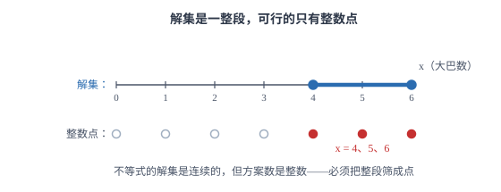

不等式（组）的应用与方案决策
条件给的是「范围」而不是「相等」时用不等式；求出的解集里筛出整数解，就是一个个可行方案。
| 所属主题 | 方程与不等式 |
|---|---|
| 所属模块 | 代数 |
| 课标学段 | 第四学段（7~9 年级） |
| 前置知识 | 一元一次不等式（组）、列方程（组）解应用题 |
| 核心素养 | 模型观念应用意识运算能力 |
教材定位
人民教育出版社《人教版（2024版）义务教育教科书·数学》
七年级下册第11章 不等式与不等式组11.2 一元一次不等式11.3 一元一次不等式组
落在七下 11.2、11.3 的解集在方案决策题里的用法：把「至多、至少」翻成不等式或不等式组，再取整数解。教材在练习中体现，本篇把它整理成决策流程。
说明
应用题的条件有两种：一种是「两者相等」，列方程；另一种是「不超过」「不少于」「至少」「至多」，列不等式。判断依据是题目里的边界词——出现「不超过、不多于、最多、至多」用 ≤；出现「不少于、不低于、至少、最少」用 ≥；出现「少于、低于、超过」用 < 或 >。把这些词准确翻译成不等号，是这类题的第一关。
方案决策题的完整流程是：设未知数、把每个限制条件翻译成不等式、联立成不等式组、解出解集、在解集里筛出符合实际的整数解（有时还要筛出正整数解）、对每个可行方案算出目标量（费用、利润、用料）、比较后给出最优方案。解集往往是一段范围，而方案是范围里的整数点，这一步「从范围到点」是本页与普通不等式题的分界。
使用场景
当题目问「有几种购买（租用）方案」「哪种方案最省钱」时，是典型的方案决策题。设一种物品的数量为 x，用总数量或总费用写出另一个量，把「座位不少于」「费用不超过」「两种都要买」逐条翻成不等式，解出 x 的范围，再逐个取整数算总费用。
当题目问「至少要卖多少件才能不亏本」「最多能买多少本」时，是单一约束的最值题。这类题只有一条不等式，解出边界后按「至少」向上取整、「至多」向下取整，再回代检验取整后的值是否仍满足条件。判断取整方向是唯一易错点。
注意点
取整方向必须与问法一致。解出 x≤ 12.5 而 x 是整数时，最大值是 12（向下取整）；解出 x≥ 6.67 时，最小值是 7（向上取整）。取整后必须回代验证：把 12 与 13 分别代入原不等式，看哪个仍成立，这样就不必靠记忆判断方向。
隐含条件不能漏。方案题里「两种商品都要买」意味着每种数量都 ≥ 1；「租 6 辆车」意味着两种车的数量之和恰为 6，不是「不超过 6」；「人数为正整数」意味着解集要取正整数部分。这些条件题目往往一句话带过，但少一条就会多出不合法的方案。
证明

图 1：不等式的解集是连续的一整段 4≤ x≤ 6，但方案数是整数，能取的只有 x=4,5,6 三个点
证明
结论 1方案题里的「不少于 240 个」是范围条件，只能用不等式表示，用等式会把大部分可行方案排除掉。
为什么方案题必须用不等式：以租车为例：要求「座位不少于 240 个」，这是一个范围条件——座位可以是 240 个，也可以是 255 个，只要是「不少于」都行。用等式只能写「恰好 240 个」，会把大部分可行方案排除掉。范围的限制只能用不等式表达。
关键一步依据是等式与不等式表示范围的方式不同：等式 x=240 只承认一个值，不等式 x≥ 240 才表示一段允许的范围。题目说的是「不少于」，对应的正是「≥」这一个方向，所以只能列不等式。
结论 2车辆数、件数、人数只能取整数，所以不等式的解集还要筛成一个个整数点。
为什么方案是「整数点」：车辆数、商品件数、人数都只能取整数，所以解集中的连续区间要被筛成一个个整数。这一步不能省略：x≥ 4 且 x≤ 6 的解集是一整段，但真正可行的只有 x=4、5、6 三种。（见图 1）
关键一步依据是实际问题中这些量的取值只能是整数：解集是数轴上的一段连续区间，而方案数是其中整数取值的个数。所以解出不等式之后必须逐个检查区间内的整数，边界上的整数也要算进去。
结论 3不等式只保证方案「可行」，要找出最优方案必须把每个可行方案的目标量算出来比较。
为什么要逐个比较：不等式只保证每个方案「可行」（满足所有限制），不保证「最优」。可行方案可能有多个，费用各不相同，必须把每个方案的目标量算出来再比较。这也是为什么方案题的最后一步总是一张小表：方案、各项数量、总费用。
关键一步依据是不等式的作用范围：它解出的是「所有满足限制的方案」这个集合，集合内部没有优劣之分。最优必须靠目标量（如总费用）在各可行方案之间比较，所以最后一步是列表逐项计算，而不是看解集的长短。
结论 4总费用若能写成关于 x 的一次式（如 400x+280(6-x)=1680+120x），它的增减就由 x 的系数决定，不必逐个算也能看出哪个方案最省。
目标量与未知数的关系：若总费用能写成关于 x 的一次式（如 400x+280(6-x)=1680+120x），那么它的增减就由 x 的系数决定，不必逐个算也能看出哪个方案最省。这一步把不等式与一次函数接了起来，是后续学习一次函数应用的入口。
关键一步依据是一次式的增减由一次项系数决定：上式整理后是 1680+120x，系数 120>0 说明 x 越大总费用越高，最省的就是 x 取最小可行值的那一档。把目标量整理成关于 x 的一次式，就替代了逐个试算。
动手实验
用枚举法验证不等式解集与方案的一一对应。设 x 为大巴数量、共租 6 辆，座位条件 45x+30(6-x)≥ 240 化简得 15x≥ 60、x≥ 4。把 x=0,1,2,3,4,5,6 逐个代入座位式：得 180、195、210、225、240、255、270。可以看到只有 x≥ 4 的三个值满足「不少于 240」，与解集完全一致。这种「先猜范围、再逐个验算」的办法可以用来检查不等式解得对不对。
解题思路
方案决策题走五步：设未知数（通常设数量较少或有上下界的那一种）；用总数量表示另一个量；把每条限制翻成不等式，联立成组；解不等式组得范围；筛整数解、算目标量、比较。答题时把可行方案列成表格，一行一个方案，最后一列写总费用或总利润，比较结果一目了然，也不容易漏方案。
翻译边界词时注意「含不含端点」：「不超过 300 元」是 ≤ 300，「低于 300 元」是 <300。这类差别在方案题里可能正好决定某个方案算不算数，写完不等式要把原句读一遍，确认等号是否该有。
最省费用的判断不必逐个试算，只看 x 的系数：把总费用整理成 W=kx+b，k>0 时 x 越小 W 越小，取 x 的最小值最省；k<0 时反过来取最大值。这样只需算一个方案的费用，其余的由系数符号直接推出。若时间允许，仍建议把两端的方案各算一遍做交叉验证。
按场景的例题
例 1（场景：方案选择） 租大巴与中巴运送学生
某校 240 名学生要去参观，计划共租 6 辆车。45 座大巴每辆租金 400 元，30 座中巴每辆租金 280 元。要求座位总数不少于 240 个，问有几种租车方案？哪种最省钱？
解：设租大巴 x 辆，则中巴 (6-x) 辆，x 为整数且 0≤ x≤ 6。座位条件：45x+30(6-x)≥ 240，化简得 15x+180≥ 240，即 x≥ 4。所以 x=4、5、6，共三种方案。总费用 W=400x+280(6-x)=120x+1680。逐个算：x=4 时 W=480+1680=2160；x=5 时 W=600+1680=2280；x=6 时 W=720+1680=2400。因为 W 随 x 增大而增大，取最小的 x=4 最省。核对座位：4× 45+2× 30=180+60=240，正好够坐。
答：有三种方案（大巴 4、5、6 辆）；租大巴 4 辆、中巴 2 辆最省，费用 2160 元。
例 2（场景：销售与利润） 固定成本下的盈亏平衡
某文具店购进一种笔记本，进价每本 8 元，售价每本 12 元。店铺每月房租等固定支出共 400 元。每月至少要卖出多少本，才能不亏本？
解：设每月卖出 x 本，利润为 12x-8x-400=4x-400。「不亏本」即利润不小于零：4x-400≥ 0，解得 x≥ 100。因为本数是整数，取 x=100。检验边界：卖 100 本时利润 4× 100-400=0，恰好不亏不赚；卖 99 本时利润 396-400=-4，亏 4 元，不符合。
答：每月至少卖出 100 本。
例 3（场景：生活优化） 固定总件数下的采购搭配
学校用不超过 1000 元的经费购买篮球和排球共 15 个，篮球每个 80 元，排球每个 50 元。篮球最多能买多少个？
解：设买篮球 x 个，则排球 (15-x) 个，x 为整数且 0≤ x≤ 15。费用条件：80x+50(15-x)≤ 1000，化简得 30x+750≤ 1000，即 30x≤ 250，x≤ 81/3。取整数，x 最大为 8。检验：x=8 时费用 640+350=990 元，不超过 1000；x=9 时费用 720+300=1020 元，超过 1000，不符合。
答：篮球最多买 8 个（排球 7 个），共花 990 元。
常用推论
若总费用可写成 W=kx+b，则 k>0 时 W 随 x 增大而增大、取 x 最小值最省；k<0 时反之。这条把「逐个数方案」简化成「看一次项系数的符号」，是方案题提速的关键。
方案题的解集端点若不满足实际条件（如必须是正整数、必须能被某数整除），要在这个范围内继续筛选。常见附加条件有：数量为正整数、总价必须整除、两种都要购买（即每种至少 1）。
「至少多少才能不亏本」这类临界问题的答案是「使目标量等于零的那个值」，再按整数取整。若取整后可能越过临界点，一定要回代：向上取整后目标量应转为非负，向下取整后应仍为非正。
易错点
错解出 x≤ 12.5 后写「最多 13 个」。
为什么错向上取整了。12.5 已经超过上限，13 代入后不满足 x≤ 12.5，正确方向是向下取整。
正确最多 12 个。回代验证：12 个满足条件，13 个不满足，取整方向由此确定。
错租车题中只列「座位不少于 240」一条不等式，忽略「共租 6 辆」这个条件，得到无数组方案。
为什么错题目给的是两个条件：座位下限与车辆总数。「共租 6 辆」是一个等式约束，必须用来把中巴数量写成 (6-x)，否则方案数无法收敛。
正确同时使用两条：设大巴 x 辆、中巴 (6-x) 辆，再对座位列不等式。两条条件一起用，方案才有限。
错比较方案时只算了一个方案的费用，就断言它最省。
为什么错不等式只保证方案可行，不保证最优。可行方案有多个时，必须逐个算或由增减性判断，否则结论没有依据。
正确把每个可行方案的各项数量与总费用列成表逐个比较，或用「x 的系数符号」说明为什么端点最省，并在答案中写出比较过程。
直观理解
把方案决策想成「在一个允许的区间里挑整数点，再看哪个点最划算」。不等式负责划出这段区间（哪些方案合法），整数条件负责把区间切成一个个可选的点，目标量（费用、利润）则是给每个点打的分。三步各管一件事，混在一起就容易漏：只划区间不筛整数，方案会多出小数；只筛点不比分数，就不知道哪个最优。